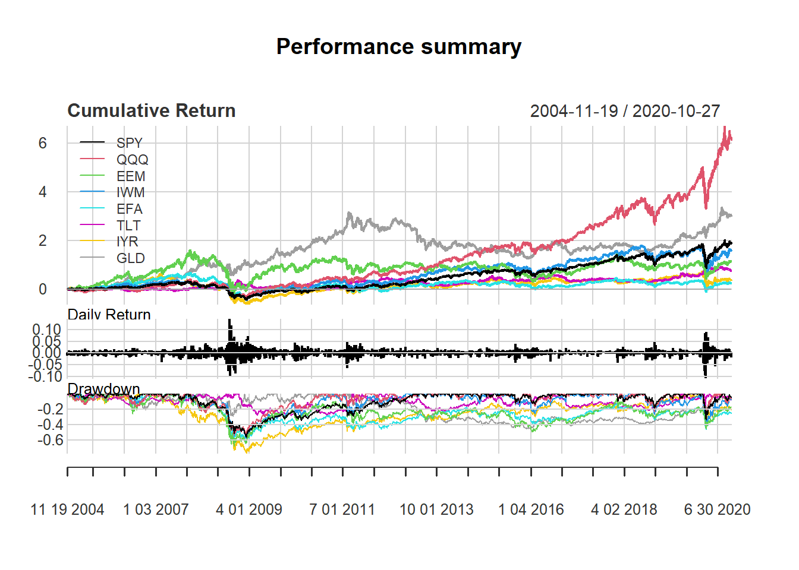
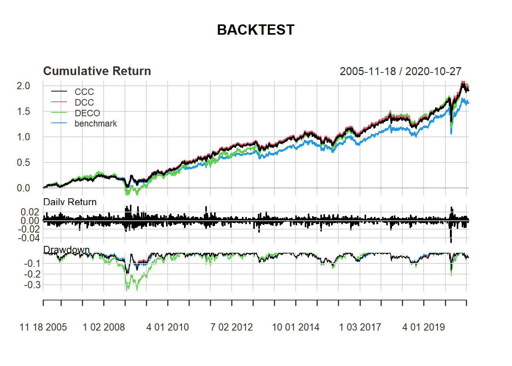
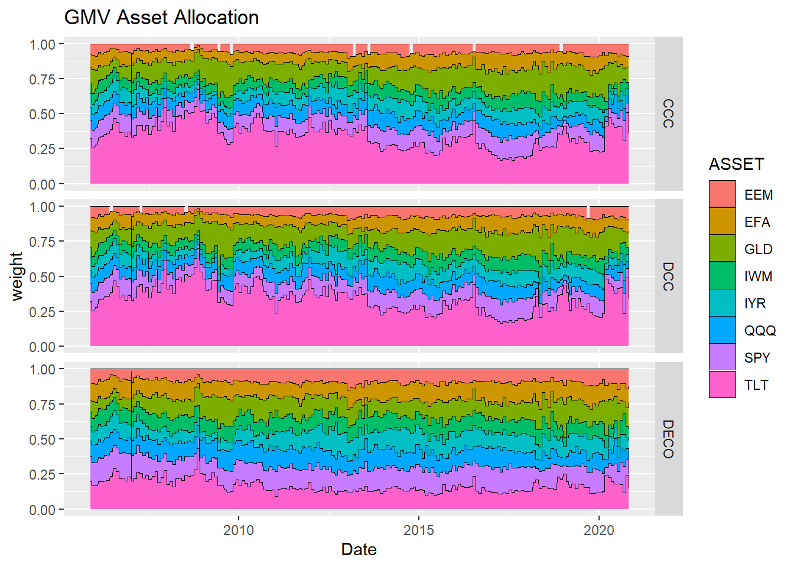
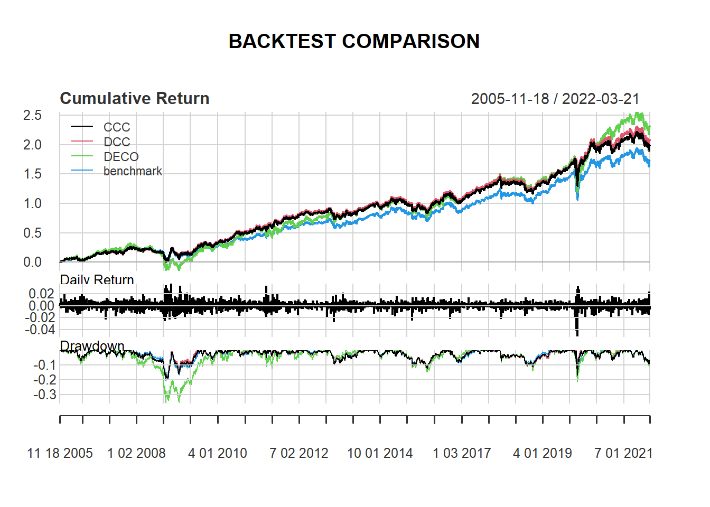
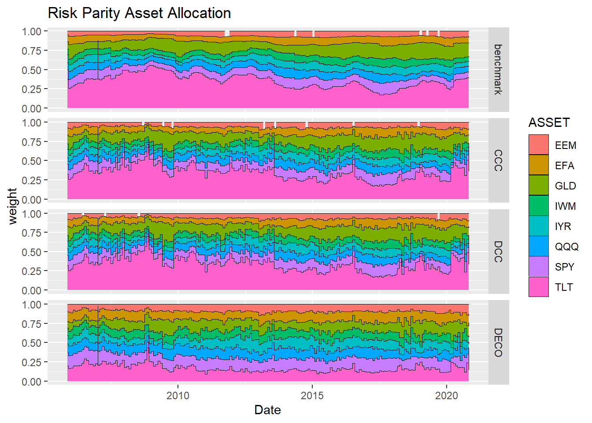

I built the Asset Allocation Model in R.
Hi. I attended a workshop on asset allocation at my place of work, so I’d like to run some simulations here, even though this field is completely outside my expertise. In this article, I would like to do an exercise on how to estimate the variance-covariance matrix (predictions) of a minimum variance portfolio as the base portfolio, referring to previous studies. The reference research is in the following paper (in the Journal of Operations Research).
Asset Allocation with Correlation: A Composite Trade-Off
1. Minimum Variance Portfolio
I won’t go into a detailed explanation of the minimum variance portfolio here, but it is a portfolio that calculates the average return and variance of each asset (domestic stocks, foreign stocks, domestic bonds, foreign bonds, and alternatives), plots them on a quadratic plane of average return vertical and variance horizontal axes, calculates the range of possible investments, and then calculates the smallest variance in the set (see the chart below).

minimum variance portfolio
In an earlier study, Carroll et. al. (2017), the following is stated
this paper focusses on minimum-variance portfolios requiring only estimates of asset covariance, hence bypassing the well-known problem of estimation error in forecasting expected asset returns.
Even at present, it is difficult to estimate expected returns, and a minimum variance portfolio, which does not require it, is a useful and practical technique. The objective function of a minimum variance portfolio is, as the name implies, to minimize diversification. If we now denote the vector of collected returns for each asset by \(r\), the holding weight of each asset by \(\theta\), and the portfolio return by \(R_{p}\), then the overall portfolio variance \(var(R_{p})\) can be written as follows.
\[ var(R_{p}) = var(r^{T}\theta) = E( (r^{T}\theta)(r^{T}\theta)^{T}) = \theta^{T}\Sigma\theta \]
where \(Sigma\) is the variance-covariance matrix of \(r\). Thus, the minimization problem is as follows
\[ \min_{\theta}(\theta^{T}\Sigma\theta) \\ s.t 1^{T}\theta = 1 \]
Here we have added full investment as a constraint. Let’s use the Lagrangian to solve this problem. The Lagrange function \(L\) is as follows
\[ L = \theta^{T}\Sigma\theta + \lambda(1^{T}\theta - 1) \]
The first condition is
\[ \displaystyle\frac{\partial L}{\partial \theta} = 2\Sigma\theta + 1\lambda = 0 \\ \displaystyle \frac{\partial L}{\partial \lambda} = 1^{T} \theta = 1 \]
Solving the first equation for \(\theta\), we find that
\[ \theta = \Sigma^{-1}1\lambda^{*} \]
where \(\lambda^{*}=-1/2\lambda\). Substitute this into the second formula and solve for \(\lambda^{*}\)
\[ 1^{T}\Sigma1\lambda^{*} = 1 \\ \displaystyle \lambda^{*} = \frac{1}{1^{T}\Sigma^{-1}1} \]
Since \(\theta = \Sigma^{-1}1\lambda^{*}\), erasing \(\lambda^{*}\) will cause it to be
\[ \displaystyle \theta_{gmv} = \frac{\Sigma^{-1}1}{1^{T}\Sigma^{-1}1} \]
and we can now find the optimal weight. For now, I’ll implement this in R.
gmv <- function(r_dat,r_cov){
library(MASS)
i <- matrix(1,NCOL(r_dat),1)
r_weight <- (ginv(r_cov)%*%i)/as.numeric(t(i)%*%ginv(r_cov)%*%i)
wr_dat <- r_dat*as.numeric(r_weight)
portfolio <- apply(wr_dat,1,sum)
pr_dat <- data.frame(wr_dat,portfolio)
sd <- sd(portfolio)
result <- list(r_weight,pr_dat,sd)
names(result) <- c("weight","return","portfolio risk")
return(result)
}
nlgmv <- function(r_dat,r_cov){
qp.out <- solve.QP(Dmat=r_cov,dvec=rep(0,NCOL(r_dat)),Amat=cbind(rep(1,NCOL(r_dat)),diag(NCOL(r_dat))),
bvec=c(1,rep(0,NCOL(r_dat))),meq=1)
r_weight <- qp.out$solution
wr_dat <- r_dat*r_weight
portfolio <- apply(wr_dat,1,sum)
pr_dat <- data.frame(wr_dat,portfolio)
sd <- sd(portfolio)
result <- list(r_weight,pr_dat,sd)
names(result) <- c("weight","return","portfolio risk")
return(result)
}The input is a return and variance-covariance matrix for each asset. The output is the weight, return and risk. nlgmv is a short-sale constrained version of the minimum variance portfolio. Since we cannot get an analytical solution, we are trying to get a numerical solution.
2. How to predict the variance-covariance matrix
We have found the formula for the minimum variance portfolio. The next step is to analyze how to find the input, the variance-covariance matrix. I think the most primitive approach would be the historical approach of finding the covariance matrix for a sample of return data available before that point in time, and then finding the minimum variance portfolio by fixing the value of the covariance matrix (i.e., the weights are also fixed). However, since this is just using historical averages for future projections, I’m sure there will be all sorts of problems. As a non-specialist, I can think of a situation where the return on asset A declined significantly the day before, but the variance of this asset is expected to remain high tomorrow, and the effect of yesterday is diluted by using the average. And I feel that not changing the weights from the start would also move away from the optimal point over time. However, there seems to be some trial and error in this area as to how to estimate it then. Also, in Carroll et. al. (2017), it is stated that,
The estimation of covariance matrices for portfolios with a large number of assets still remains a fundamental challenge in portfolio optimization.
The estimates in this paper are based on the following models. All of them are unique in that the variance-covariance matrix is time-varying.
A. Constant conditional correlation (CCC) model
The original paper is here.
First, from the relationship between the variance-covariance matrix and the correlation matrix, we have \(\Sigma_{t} = D_{t}R_{t}D_{t}\), where \(R_{t}\) is the variance-covariance matrix and \(D_{t}\) is \(diag(\sigma_{1,t},...,\sigma_{N,t})\), a matrix whose diagonal components are the standard deviation of each asset in \(tt\) period. From here, we estimate \(D_{t}\) and \(R_{t}\) separately. First, \(D_{t}\) is estimated using the following multivariate GARCH model (1,1).
\[ r_{t} = \mu + u_{t} \\ u_{t} = \sigma_{t}\epsilon \\ \sigma_{t}^{2} = \alpha_{0} + \alpha_{1}u_{t-1}^{2} + \alpha_{2}\sigma_{t-1}^{2} \\ \epsilon_{t} = NID(0,1) \\ E(u_{t}|u_{t-1}) = 0 \] where \(\mu\) is the sample mean of the returns. \(\alpha_{i}\) is the parameter to be estimated. Since we are estimating \(D_{t}\) with GARCH, we can say that we are modeling a relationship where the distribution of returns follows a thicker base distribution than the normal distribution and where the change in returns is not constant but depends on the variance of the previous day. We can say that we have estimated \(D_{t}\) in this way. The next step in the estimation of \(R_{t}\) is to take a historical approach to the estimation of \(R_{t}\), in which the returns are sampled. In other words, \(R_{t}\) is a constant. Thus, we are making the assumption that the magnitude of return variation varies with time, but the relative relationship of each asset is invariant.
B. Dynamic Conditional Correlation (DCC) model
The original paper is here。
こちらのモデルでは、\(D_{t}\)を求めるところまでは①と同じですが、[\(R_{t}\)の求め方が異なっており、ARMA(1,1)を用いて推計します。相関行列はやはり定数ではないということで、\(tex:t\)期までに利用可能なリターンを用いて推計をかけようということになっています。このモデルの相関行列\(R_{t}\)は、
This model is the same as (1) up to the point of finding \(D_{t}\), but the way of finding \(R_{t}\) is different, and we use ARMA(1,1) to estimate it. Since the correlation matrix is still not a constant, we are going to use the available returns up to the \(t\) period to make the estimate. The correlation matrix \(R_{t}\) in this model is
\[ R_{t} = diag(Q_{t})^{-1/2}Q_{t}diag(Q_{t})^{-1/2} \]
where \(Q_{t}\) is a conditional variance-covariance matrix in the \(t\) period, formulated as follows,
\[ Q_{t} = \bar{Q}(1-a-b) + adiag(Q_{t-1})^{1/2}\epsilon_{i,t-1}\epsilon_{i,t-1}diag(Q_{t-1})^{1/2} + bQ_{t-1} \]
where \(\bar{Q}\) is the variance-covariance matrix calculated in a historical way and \(a,b\) is the parameter. This method differs from the previous one in that it assumes that not only does the magnitude of return variation vary with time, but also the relative relationship of each asset changes over time. Since we have observed some events in which the returns of all assets fall and the correlation of each asset becomes positive during a financial crisis, this formulation may be attractive.
C. Dynamic Equicorrelation (DECO) model
The original paper is here。
I haven’t read this paper exactly yet, but from the definition of the correlation matrix \(R_{t}\) becomes
\[ R_{t} = (1-\rho_{t})I_{N} + \rho_{t}1 \]
Here, \(\rho_{t}\) is a scalar and a coefficient for the degree of equicorrelation, and I understand that equicorrelation is an average pair-wise correlation. In other words, if there are no missing values, it’s no different than a normal correlation. However, it seems to be a good estimator in that respect, because as assets increase, such problems need to be addressed. We can calculate \(\rho_{t}\) as follows.
\[ \displaystyle \rho_{t} = \frac{1}{N(N-1)}(\iota^{T}R_{t}^{DCC}\iota - N) = \frac{2}{N(N-1)}\sum_{i>j}\frac{q_{ij,t}}{\sqrt{q_{ii,t} q_{jj,t}}} \]
where \(\iota\) is an \(N×1\) vector with all elements being 1. And \(q_{ij,t}\) is the \(i,j\) element of \(Q_{t}\).
Now that we’ve modeled the variance-covariance matrix, we’ll implement it so far in R.
carroll <- function(r_dat,FLG){
library(rmgarch)
if(FLG == "benchmark"){
H <- cov(r_dat)
}else{
#1. define variables
N <- NCOL(r_dat) # the number of assets
#2. estimate covariance matrix
basic_garch = ugarchspec(mean.model = list(armaOrder = c(0, 0),include.mean=TRUE), variance.model = list(garchOrder = c(1,1), model = 'sGARCH'), distribution.model = 'norm')
multi_garch = multispec(replicate(N, basic_garch))
dcc_set = dccspec(uspec = multi_garch, dccOrder = c(1, 1), distribution = "mvnorm",model = "DCC")
fit_dcc_garch = dccfit(dcc_set, data = r_dat, fit.control = list(eval.se = TRUE))
forecast_dcc_garch <- dccforecast(fit_dcc_garch)
if (FLG == "CCC"){
#Constant conditional correlation (CCC) model
D <- sigma(forecast_dcc_garch)
R_ccc <- cor(r_dat)
H <- diag(D[,,1])%*%R_ccc%*%diag(D[,,1])
colnames(H) <- colnames(r_dat)
rownames(H) <- colnames(r_dat)
}
else{
#Dynamic Conditional Correlation (DCC) model
H <- as.matrix(rcov(forecast_dcc_garch)[[1]][,,1])
if (FLG == "DECO"){
#Dynamic Equicorrelation (DECO) model
one <- matrix(1,N,N)
iota <- rep(1,N)
Q_dcc <- rcor(forecast_dcc_garch,type="Q")[[1]][,,1]
rho <- as.vector((N*(N-1))^(-1)*(t(iota)%*%Q_dcc%*%iota-N))
D <- sigma(forecast_dcc_garch)
R_deco <- (1-rho)*diag(1,N,N) + rho*one
H <- diag(D[,,1])%*%R_deco%*%diag(D[,,1])
colnames(H) <- colnames(r_dat)
rownames(H) <- colnames(r_dat)
}
}
}
return(H)
}I shouldn’t normally use the package, but since it’s an exercise today I’m only going to pursue the results of the estimates, and I’ll be writing a post about GARCH in the next week or so. Now we’re ready to go. We can now put the return data into this function to calculate the variance-covariance matrix and use it to calculate the minimum variance portfolio.
3. Collection of data for testing
The data was based on the following article.
(Introduction to Asset Allocation)[https://www.r-bloggers.com/introduction-to-asset-allocation/]
We used NAV data for an ETF (iShares) that is linked to the following index
- S&P500
- NASDAQ100
- MSCI Emerging Markets
- Russell 2000
- MSCI EAFE
- US 20 Year Treasury(the Barclays Capital 20+ Year Treasury Index)
- U.S. Real Estate(the Dow Jones US Real Estate Index)
- gold bullion market
The first step is to collect data.
library(quantmod)
#**************************
# ★8 ASSETS SIMULATION
# SPY - S&P 500
# QQQ - Nasdaq 100
# EEM - Emerging Markets
# IWM - Russell 2000
# EFA - EAFE
# TLT - 20 Year Treasury
# IYR - U.S. Real Estate
# GLD - Gold
#**************************
# load historical prices from Yahoo Finance
symbol.names = c("S&P 500","Nasdaq 100","Emerging Markets","Russell 2000","EAFE","20 Year Treasury","U.S. Real Estate","Gold")
symbols = c("SPY","QQQ","EEM","IWM","EFA","TLT","IYR","GLD")
getSymbols(symbols, from = '1980-01-01', auto.assign = TRUE)
#gn dates for all symbols & convert to monthly
hist.prices = merge(SPY,QQQ,EEM,IWM,EFA,TLT,IYR,GLD)
month.ends = endpoints(hist.prices, 'day')
hist.prices = Cl(hist.prices)[month.ends, ]
colnames(hist.prices) = symbols
# remove any missing data
hist.prices = na.omit(hist.prices['1995::'])
# compute simple returns
hist.returns = na.omit( ROC(hist.prices, type = 'discrete') )
# compute historical returns, risk, and correlation
ia = list()
ia$expected.return = apply(hist.returns, 2, mean, na.rm = T)
ia$risk = apply(hist.returns, 2, sd, na.rm = T)
ia$correlation = cor(hist.returns, use = 'complete.obs', method = 'pearson')
ia$symbols = symbols
ia$symbol.names = symbol.names
ia$n = length(symbols)
ia$hist.returns = hist.returns
# convert to annual, year = 12 months
annual.factor = 12
ia$expected.return = annual.factor * ia$expected.return
ia$risk = sqrt(annual.factor) * ia$risk
rm(SPY,QQQ,EEM,IWM,EFA,TLT,IYR,GLD)Here’s how the returns are plotted.
PerformanceAnalytics::charts.PerformanceSummary(hist.returns, main = "Performance summary")
Next, we’ll code the backtest. We’ll publish the code all at once.
# BACK TEST
backtest <- function(r_dat,FLG,start_date,span,learning_term,port){
#-----------------------------------------
# BACKTEST
# r_dat - return data(xts object)
# FLG - flag(CCC,DCC,DECO)
# start_date - start date for backtest
# span - rebalance frequency
# learning_term - learning term (days)
# port - method of portfolio optimization
#-----------------------------------------
library(stringi)
initial_dat <- r_dat[stri_c(as.Date(start_date)-learning_term,"::",as.Date(start_date))]
for (i in NROW(initial_dat):NROW(r_dat)) {
if (i == NROW(initial_dat)){
H <- carroll(initial_dat[1:(NROW(initial_dat)-1),],FLG)
if (port == "nlgmv"){
result <- nlgmv(initial_dat,H)
}else if (port == "risk parity"){
result <- risk_parity(initial_dat,H)
}
weight <- t(result$weight)
colnames(weight) <- colnames(initial_dat)
p_return <- initial_dat[NROW(initial_dat),]*result$weight
} else {
if (i %in% endpoints(r_dat,span)){
H <- carroll(test_dat[1:(NROW(test_dat)-1),],FLG)
if (port == "nlgmv"){
result <- nlgmv(test_dat,H)
}else if (port == "risk parity"){
result <- risk_parity(test_dat,H)
}
}
weight <- rbind(weight,t(result$weight))
p_return <- rbind(p_return,test_dat[NROW(test_dat),]*result$weight)
}
if (i != NROW(r_dat)){
term <- stri_c(index(r_dat[i+1,])-learning_term,"::",index(r_dat[i+1,]))
test_dat <- r_dat[term]
}
}
p_return$portfolio <- xts(apply(p_return,1,sum),order.by = index(p_return))
weight.xts <- xts(weight,order.by = index(p_return))
result <- list(p_return,weight.xts)
names(result) <- c("return","weight")
return(result)
}
CCC <- backtest(hist.returns,"CCC","2007-01-04","months",365,"risk parity")
DCC <- backtest(hist.returns,"DCC","2007-01-04","months",365,"risk parity")
DECO <- backtest(hist.returns,"DECO","2007-01-04","months",365,"risk parity")
benchmark <- backtest(hist.returns,"benchmark","2007-01-04","months",365,"risk parity")
result <- merge(CCC$return$portfolio,DCC$return$portfolio,DECO$return$portfolio,benchmark$return$portfolio)
colnames(result) <- c("CCC","DCC","DECO","benchmark")Here’s a graph of the calculation results.
PerformanceAnalytics::charts.PerformanceSummary(result,main = "BACKTEST")
I did not use the minimum variance portfolio defined above because I imposed a short sale constraint. Apparently it’s difficult to solve analytically with this alone, so I’m going to solve numerically. I used a weekly rebalancing period, so it took me a while to calculate the results on my own PC, but I was able to calculate the results.
Since Lehman, it appears to have outperformed the benchmark equal weighted portfolio. In particular, DECO is looking good. I would like to rethink the meaning of Equicorrelation. The change in each incorporation ratio is as follows.
# plot allocation weighting
d_allocation <- function(ggweight,title){
#install.packages("tidyverse")
library(tidyverse)
ggweight <- gather(ggweight,key=ASSET,value=weight,-Date,-method)
ggplot(ggweight, aes(x=Date, y=weight,fill=ASSET)) +
geom_area(colour="black",size=.1) +
scale_y_continuous(limits = c(0,1)) +
labs(title=title) + facet_grid(method~.)
}
gmv_weight <- rbind(data.frame(CCC$weight,method="CCC",Date=index(CCC$weight)),data.frame(DCC$weight,method="DCC",Date=index(DCC$weight)),data.frame(DECO$weight,method="DECO",Date=index(DECO$weight)))
# plot allocation weighting
d_allocation(gmv_weight,"GMV Asset Allocation")
They seem to have increased their allocation to TLT, or U.S. Treasuries, during Lehman, while CCC and DCC have a high allocation to U.S. Treasuries in other areas as well, and the often-cited problem of a minimally diversified portfolio seems to be occurring here as well. On the other hand, DECO has a unique mix ratio, and I think we need to go back and read the paper again.
PS（2019/3/3） So far, I’ve been doing the analysis with a minimum variance portfolio, but I also wanted to see the results of risk parity, so I wrote the code for that as well.
risk_parity <- function(r_dat,r_cov){
fn <- function(weight, r_cov) {
N <- NROW(r_cov)
risks <- weight * (r_cov %*% weight)
g <- rep(risks, times = N) - rep(risks, each = N)
return(sum(g^2))
}
dfn <- function(weight,r_cov){
out <- weight
for (i in 0:length(weight)) {
up <- dn <- weight
up[i] <- up[i]+.0001
dn[i] <- dn[i]-.0001
out[i] = (fn(up,r_cov) - fn(dn,r_cov))/.0002
}
return(out)
}
std <- sqrt(diag(r_cov))
x0 <- 1/std/sum(1/std)
res <- nloptr::nloptr(x0=x0,
eval_f=fn,
eval_grad_f=dfn,
eval_g_eq=function(weight,r_cov) { sum(weight) - 1 },
eval_jac_g_eq=function(weight,r_cov) { rep(1,length(std)) },
lb=rep(0,length(std)),ub=rep(1,length(std)),
opts = list("algorithm"="NLOPT_LD_SLSQP","print_level" = 0,"xtol_rel"=1.0e-8,"maxeval" = 1000),
r_cov = r_cov)
r_weight <- res$solution
names(r_weight) <- colnames(r_cov)
wr_dat <- r_dat*r_weight
portfolio <- apply(wr_dat,1,sum)
pr_dat <- data.frame(wr_dat,portfolio)
sd <- sd(portfolio)
result <- list(r_weight,pr_dat,sd)
names(result) <- c("weight","return","portfolio risk")
return(result)
}
CCC <- backtest(hist.returns,"CCC","2007-01-04","months",365,"risk parity")
DCC <- backtest(hist.returns,"DCC","2007-01-04","months",365,"risk parity")
DECO <- backtest(hist.returns,"DECO","2007-01-04","months",365,"risk parity")
benchmark <- backtest(hist.returns,"benchmark","2007-01-04","months",365,"risk parity")
result <- merge(CCC$return$portfolio,DCC$return$portfolio,DECO$return$portfolio,benchmark$return$portfolio)
colnames(result) <- c("CCC","DCC","DECO","benchmark")Here’s the result.
PerformanceAnalytics::charts.PerformanceSummary(result, main = "BACKTEST COMPARISON")
library(plotly)
# plot allocation weighting
riskparity_weight <- rbind(data.frame(CCC$weight,method="CCC",Date=index(CCC$weight)),data.frame(DCC$weight,method="DCC",Date=index(DCC$weight)),data.frame(DECO$weight,method="DECO",Date=index(DECO$weight)),data.frame(benchmark$weight,method="benchmark",Date=index(benchmark$weight)))PerformanceAnalytics::charts.PerformanceSummary(result, main = "BACKTEST COMPARISON")
riskparity_weight <- rbind(data.frame(CCC$weight,method="CCC",Date=index(CCC$weight)),data.frame(DCC$weight,method="DCC",Date=index(DCC$weight)),data.frame(DECO$weight,method="DECO",Date=index(DECO$weight)),data.frame(benchmark$weight,method="benchmark",Date=index(benchmark$weight)))
# plot allocation weighting
d_allocation(riskparity_weight, "Risk Parity Asset Allocation")
The results are positive, with all methods outperforming benchmark. As expected, the estimation of the variance-covariance matrix seems to be performing well. The good performance of DECO may also be due to the fact that it uses the average of the correlation coefficients of each asset pair in the correlation matrix, which resulted in a greater inclusion of risk assets than the other methods. The weights are as follows
That’s it for today, for now.
Ayato Ashihara
company employee
This blog is a nightly update by a man who is working in his third year since completing graduate school. The content of this blog has nothing to do with the official position of the author’s organization.